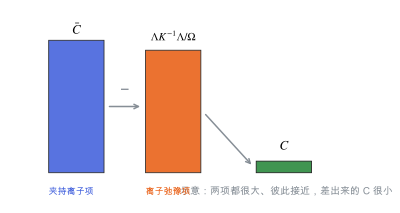

弛豫离子弹性常数中的近相消
说明弛豫离子弹性常数怎样由两项大数相减得到，以及为什么分子晶体里这种近相消会把不大的绝对数值误差变成软本征方向上很大的相对误差。
完整推导还需要
- 矩阵求逆与本征值条件数的基本概念
- 压电张量 中 d = e\,s 的换算
只是提示，不需要先读完才能往下看。
直觉直观解释
弛豫离子弹性常数不是“另算一套曲率”，而是把夹持离子曲率里会被原子弛豫抹掉的那一块减掉。分子晶体里，夹持离子项往往很大（分子内共价键很硬），离子弛豫项也几乎同样大（应变后分子可以整体平移、转动把力卸掉）。两者相减，剩下的才是分子间作用决定的有效刚度，常常只有几个 GPa 甚至更小。
这是典型的近相消 (near cancellation / subtractive cancellation)：结果远小于参与运算的两项。两项里只要各自带一点绝对误差，相对误差就会被放大到结果上。从能量到结构与响应 说的“软方向放大误差”解释的是：曲率已经很小之后，再出错会怎样；本条目解释的是：为什么软曲率会以“两项大数相减”的方式出现。

| 符号 | 是什么 | 图里对应 |
|---|---|---|
| \bar C | 夹持离子弹性常数 | 左侧蓝色高柱 |
| \Lambda K^{-1}\Lambda/\Omega | 离子弛豫贡献（示意） | 中间橙色高柱 |
| C | 弛豫离子弹性常数 | 右侧绿色矮柱 |
| “−” | 从夹持项减去弛豫贡献 | 两柱之间的箭头 |
图是示意，柱高不对应任何具体材料的数值。
定义与关键公式数学与推导
在均匀应变 \eta 下，先让原子保持分数坐标（夹持），再允许内坐标 u 弛豫到新的力为零。对弛豫后的能量求二阶导数，得到 [Wu, Vanderbilt & Hamann 2005]
其中 \bar C 是夹持离子弹性张量；\Omega 是晶胞体积；\Lambda_{mi}=-\partial^{2}E/\partial u_m\partial\eta_i 是内应变耦合（应变在原子上产生的力）；K 是去掉整体平移后的力常数矩阵。第二项半正定，所以弛豫只会让晶体变软或不变（见 弹性张量）。
取某一个单位应变方向 v，记标量
则 \lambda = \lambda_{\mathrm{cl}}-\lambda_{\mathrm{ion}}。当 \lambda_{\mathrm{cl}}\approx\lambda_{\mathrm{ion}}\gg\lambda 时，相对误差的一阶估计是
其中 \delta\lambda_{\mathrm{cl}}、\delta\lambda_{\mathrm{ion}} 是两项各自的绝对误差。若它们的量级不随 \lambda 变小而变小（例如有限差分步长噪声、自洽残余、色散是否进入力常数等带来的绝对底噪），则相对误差大致按 1/\lambda 放大。
在本研究线里的样子对应与边界
- 换算 d：实验常报告的压电应变系数满足 d=e\,s^{E}，s^{E}=C^{-1} [IEEE Std 176]。\lambda 越小，s 在该方向越大，d 对 C 的误差越敏感。近相消同时推高了“需要很大 d 的软晶体”和“算不准 C 的风险”。
- 交叉检查：同一能量面上，用不同数值路线（例如应变有限差分与位移有限差分，或有限差分与微扰）比较 \lambda_{\mathrm{cl}}、\lambda_{\mathrm{ion}} 和 \lambda。若两项各自接近、只有差 \lambda 分歧大，优先怀疑近相消放大，而不是“压电 e 算错了”（见 有限差分与微扰方法）。
- 报告方式：对很软的方向，除了报 C 或 d，同时报 \lambda 或该方向的杨氏模量量级，并说明 \lambda_{\mathrm{cl}} 与 \lambda_{\mathrm{ion}} 是否接近。
常见坑对应与边界
- 把符号不稳的 \lambda 当成材料性质：当 |\lambda| 已落到绝对数值底噪量级时，正负号可以由噪声决定，不能直接当力学失稳或高 d 的证据。
- 只收紧总能相关参数：提高截断能或收紧能量判据，主要压的是绝对误差；若 A 已经很大，相对误差仍可能大。要对目标量本身（软本征值、d）做收敛，见 收敛测试。
- 夹持项与离子项能量面不一致：一边含色散校正、一边不含，或截断能、k 点不同，会在相减里留下系统偏差；偏差同样按 1/\lambda 放大。
检验自己对应与边界
参考资料
论文Wu, Vanderbilt & Hamann 2005
尚未实际查阅，目前只是拟查阅书目
官方文档IEEE Std 176
IEEE Standard on Piezoelectricity, ANSI/IEEE Std 176-1987
尚未实际查阅，目前只是拟查阅书目
分类响应与张量性质 · 概念 · 研究线：压电与响应计算 · 状态：草稿